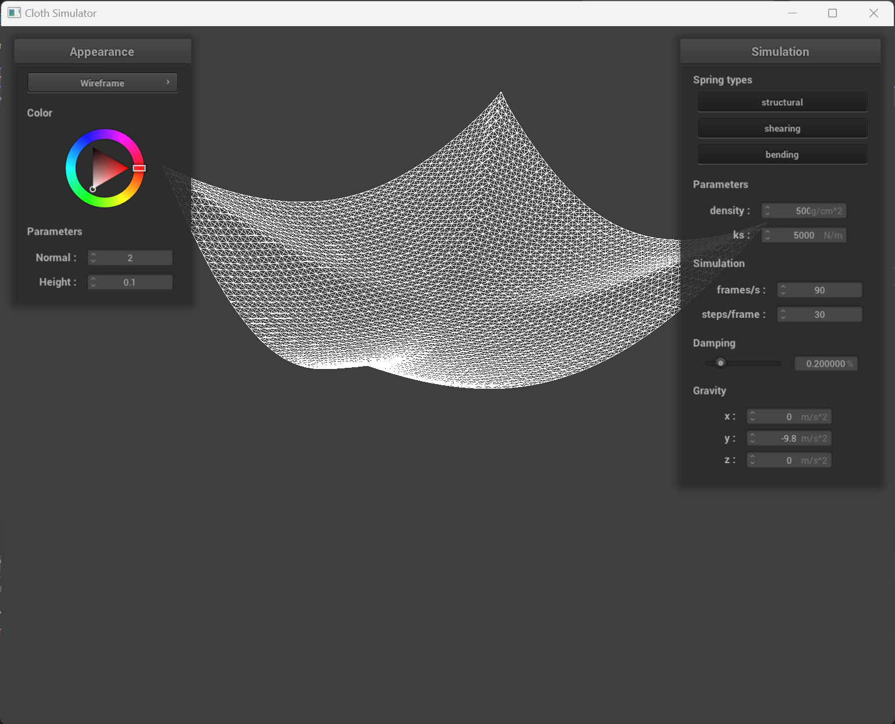

Overview
Give a high-level overview of what you implemented in this project. Think about what you've built as a whole. Share your thoughts on what interesting things you've learned from completing the project.
In this project, we implemented cloth simulation via springs and masses. The simulation includes physical features
such as gravity, collisions with other objects, and self-collision. This was an opportunity for us to
better understand how real-life physics are applied to graphics and animation. In this project, we also
implemented shaders to change how the cloth looked. This included diffuse shading, Blinn-Phong shading, texture mapping,
bump mapping, and displacement mapping.
Part 1: Masses and springs
|
Rectangular view
|
Diagonal view
|
 No shearing
No shearing
|
Only shearing
|
All constraints
|
Part 2: Simulation via numerical integration
As we increase the spring constant, the springs become tighter, requiring more
force to bend and stretch the cloth. As seen below, a cloth with a low spring constant stretches more than a cloth with a high spring constant.
|
Low spring constant (500)
|
High spring constant (50,000)
|
Varying the density of the cloth is similar to varying the spring constant. As seen below,
a higher density produces similar effects as a low spring constant, where the cloth stretches more easily.
On the other hand, a lower density produces similar effects as a high spring constant, where the cloth does not
stretch much at all.
|
Low density (1)
|

High density (500)
|
Damping affects how much the cloth floats and bounces. As seen below, low damping
results in the cloth bouncing a lot and creating many ripples. On the other hand, high damping
results in the cloth barely bouncing and reaching its resting state very quickly.
|
Low damping (0%)
|
High damping (1%)
|
|
Pinned4 in its final resting state
|
Part 4: Handling self-collitions
|
Early stage
|
Self-collision
|
|
More self-collision
|
Restful
|
Varying the density and spring constant changes how the cloth folds on itself. As seen below, with a low spring constant
or high density, the folds are much tighter and narrower, resulting in many more folds. In contrast, a
high spring constant or low density results in fewer, wider folds.
|
Low density
|
High density
|
|
Low spring constant
|
High spring constant
|
Part 3: Handling collisions with other objects
|
ks = 500
|
ks = 5000
|
|
ks = 50000
|
When changing the spring constant, we can see that for lower values of ks, the cloth is more "droopy" and hangings over the sphere more. It holds its shape less and adjusts to the shape of the sphere. For higher values of ks, the cloth is more stiff and holds it's shape a little more.
Part 5: Shaders
A shader program is an isolated program that runs on the GPU and executes the pipeline in order to compute the lighting effects for each frame. Two basic shader types are the vertex and fragment shaders. The vertex shader applies computations to the vertices of objects within the scene to change their geometric properties and compute the final location of the vertex in addition to information for use in the fragment shaders. The fragment shader takes in the information computed by the vertex shaders and compute the color of the fragment. A fragment is akin to a sample of the object.
The Blinn-Phong shading model is a model that allows the user to compute lighting coming off of an object originating from a light source in the scene. The Blinn-Phong model uses 3 components: an ambient component, a specular component, and the diffuse component. The combination of these three components give way to realistic lighting. By varying different constants within the model, one can change the appearance of the object by giving it properties of different materials.
|
Specular
|
Diffuse
|
|
Ambient
|
Total Blinn-Phong
|
|
Bump (default)
|
Displacement (default)
|
|
Bump (o = 16, a = 16)
|
Displacement (o = 16, a = 16)
|
|
Bump (o = 128, a = 128)
|
Displacement (o = 128, a = 128)
|
Despite there not being an significant visible differences, the higher valued settings should make the sphere render better with the ability to capture more details since it is more finegrained the the coarser option with lower valued settings.